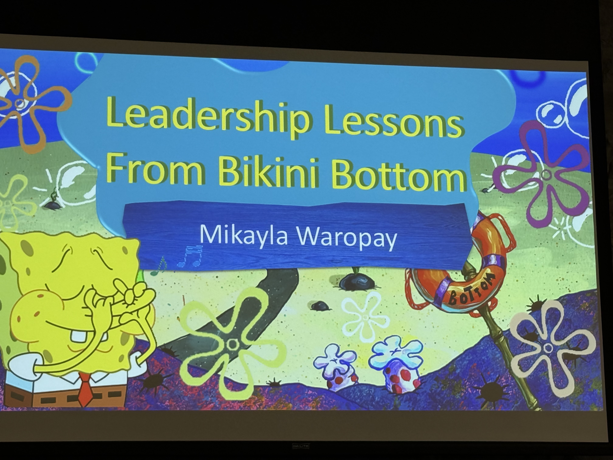
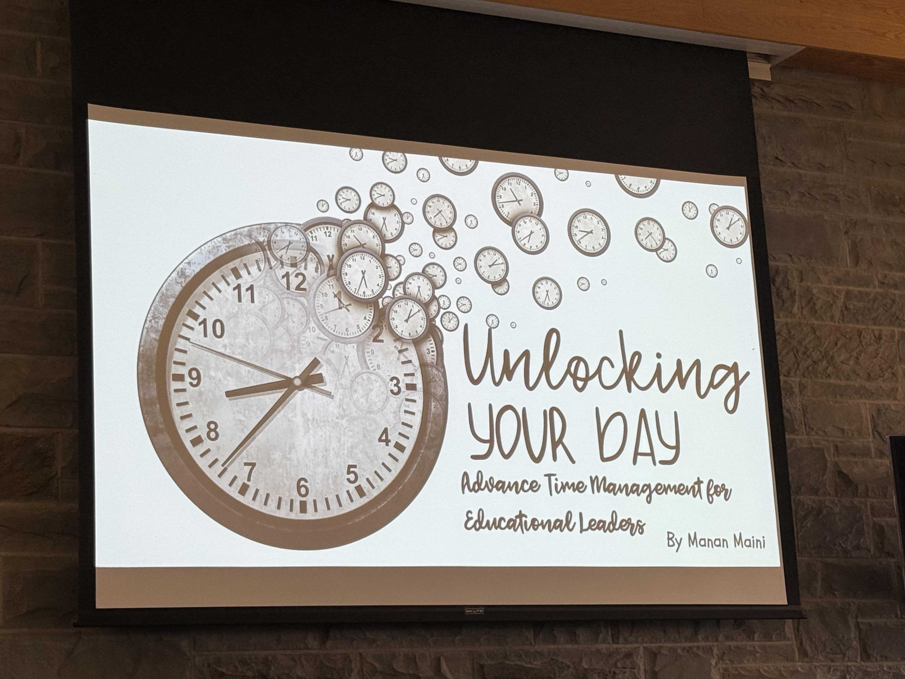
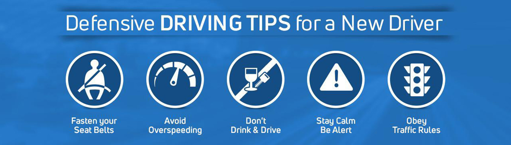
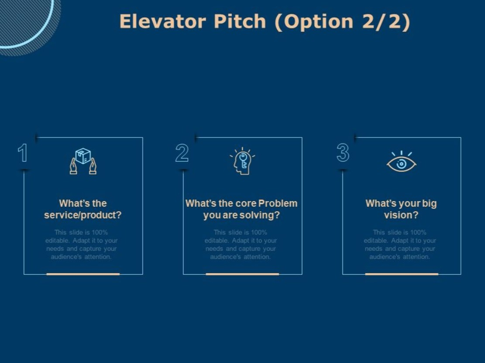
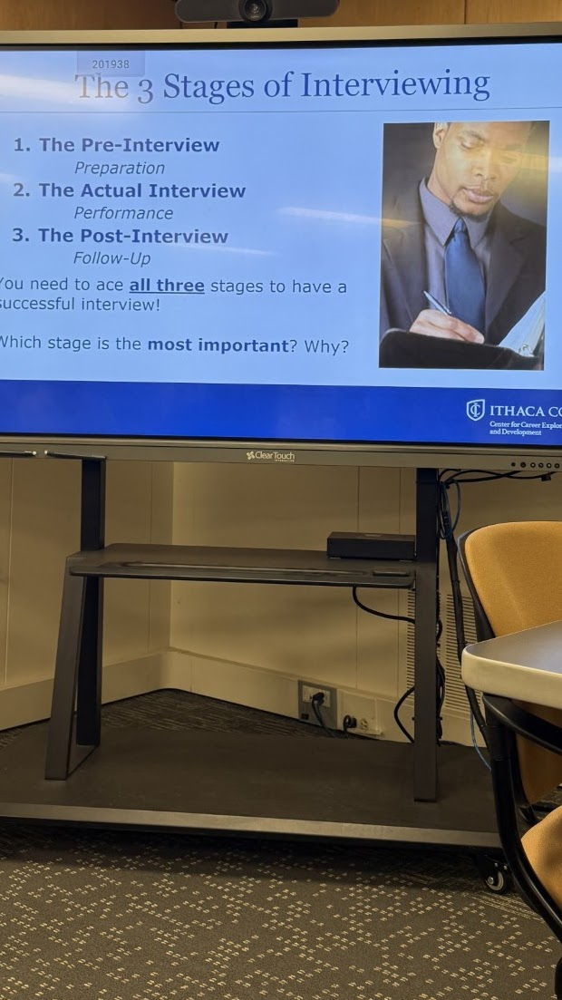
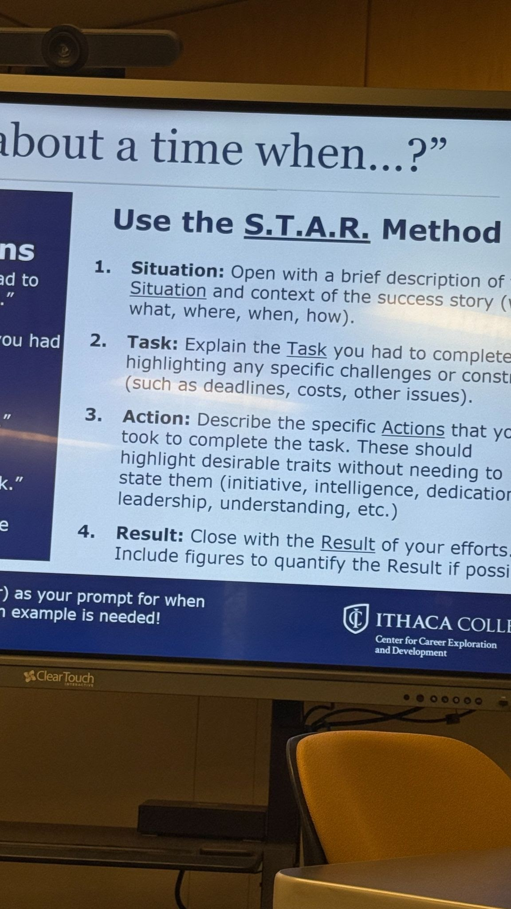
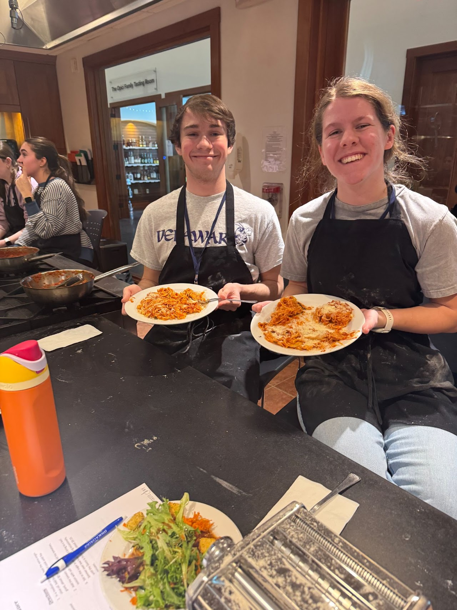
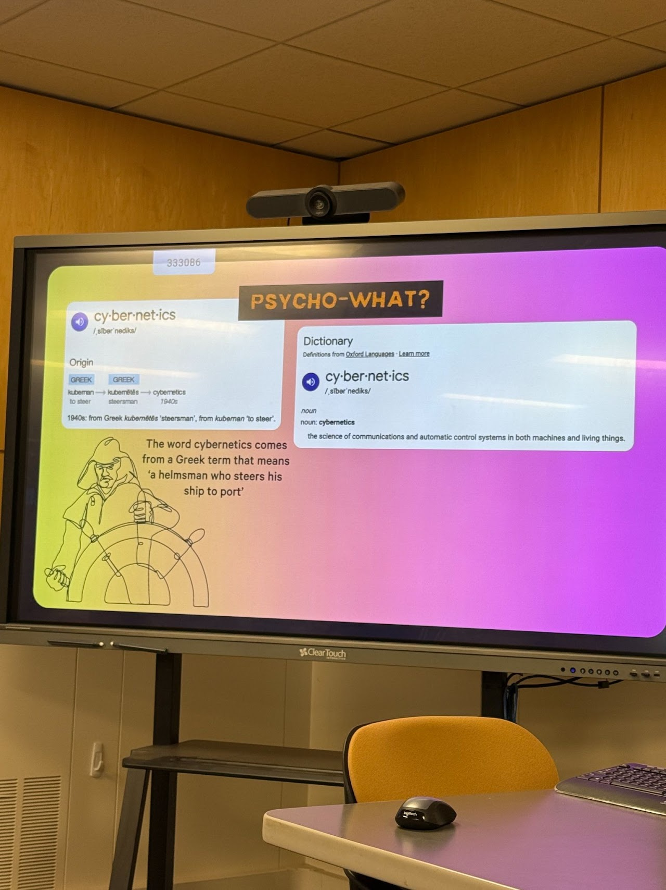
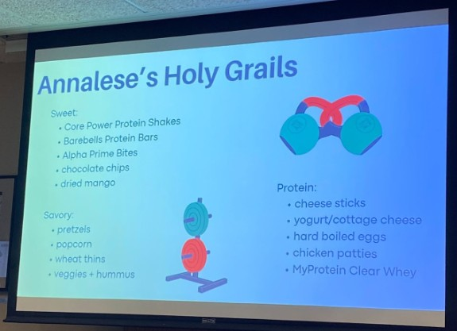
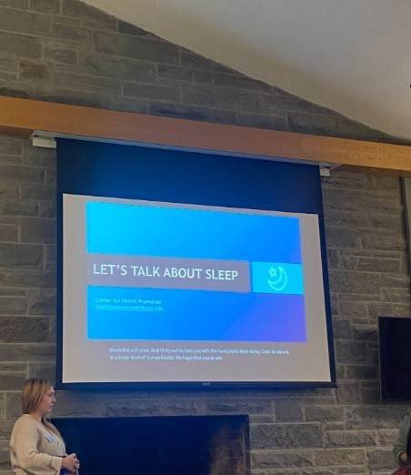

In this SLI, we talked about the character traits in each character in the hit kids show, Spongebob Squarepants. We discussed how each character has traits that make a good leader, and traits that seem harmful to their leadership skills. This helped me realize how there is no true "best" characteristics that form a good leader. Anyone can be a great leader with the right mindset.

In this SLI, we talked about time management in a way relating to computer science. We compared ourselves to how computers decide what topic to focus on first. Computers have to choose what topic to focus on first, and in some instances, the process of choosing the topic has been longer for the computer than just doing the computation. I relate to this, because I have found myself trying to figure out the optimal order to do some of my assignments, rather than just doing the assignments.

In this SLI, we discussed safe driving practices. You should never text and drive, as you are much more likely to get in an accident while on your phone, even when it wasn't directly your fault. Also, you should reduce your speed in inclement weather. This is especially useful information during Ithaca winters.

In this workshop, I learned all about LinkedIn. It is important to make connections before you need them. This way, you will be prepared for when you actually need them. It will also make it seem less like you are just asking a stranger for a favor rather than a connection for a job oppertunity. I put together my LinkedIn page in this workshop. You can check it out by clicking the LinkedIn photo here!
In this workshop, I learned all about an elevator pitch. An elevator pitch is a brief introduction of yourself and your goals for the meeting. It is supposed to be able to introduce yourself and your motive in under 30 seconds. This is important because if you get the oppertunity for a big break, you need to be prepared with a short introduction. I perfected my elevator pitch in this workshop, and practiced it on some of my peers.

In this workshop, I learned all about the essentials to prepare for in an interview. We talked about how there are actually three stages of the interview. Pre, Post, and the interview, are as important as each other. In order to make a great and lasting impression, you could send a handwritten note to the interviewer, thanking them for their time.

In this leadership workshop, I learned about how to prepare for an interview, and what to expect. You need to make sure the interview is about YOU. It is your job to audition yourself for the company. Also, body language and appearance are very important for the interview process.

In this leadership workshop, I got to make homemade pasta! I have never done that before, so it was a fun experience. I learned how to work in a team setting. After we made pasta, we got to eat it. After the cooking process, we met in a separate room and discussed what makes a good leader. We discussed how being able to work in a variety of groups and a variety of positions is important for a leader. I had a great time and can't wait for another oppertunity like this!

In this leadership workshop, I learned how powerful self-image is in shaping your life. According to Psycho-Cybernetics, the way you see yourself determines your actions and even your success. I often catch myself doubting my abilities before trying new things, which holds me back from reaching my full potential. While it feels safer to avoid risks, I realized I need to challenge those negative beliefs and give myself permission to grow. Another key takeaway from the session was how self-image can be changed through visualization and positive self-talk. Practicing these habits daily can help rewire your mind for confidence and achievement. If you want to improve any area of your life, it starts with believing you can.

In this leadership workshop, I learned about how working out doesn't need to be such a chore to do. You should make realistic goals for yourself to grow. For example, don't expect to start going to the gym seven days a week. Instead, start by going one or two times a week, and stick to that. Working out helps your brain and body. A Harvard study shows that the best deterrent for depression is activity.

In this leadership workshop, I learned a lot about how nutrition impacts every aspect of your life. While it isn't the sole cause of many problems, a surprising amount of problems can be traced back to poor eating habits. For example, overeating or undereating specific food groups can impact the dopamine levels in your brain, making you feel worse throughout the day.
In this leadership workshop, I learned about how impactful your sleep is in your life. Individuals aged 18-24 should be getting 7-9 hours of sleep each night. I tend to sacrifice my sleep schedule in order to be able to spend more time with my friends. While this seems fine, I should be going to bed, and I should be finding more time in the day to spend with them instead. Another fascinating takeaway from the session was the significant impact of alcohol and marijuana on sleep. Alcohol and marijuana can mess up your sleep for the following THREE nights! It's important to remember that IF you are planning on partaking, you should make sure the substances aren't affecting you anymore before you go to bed.
